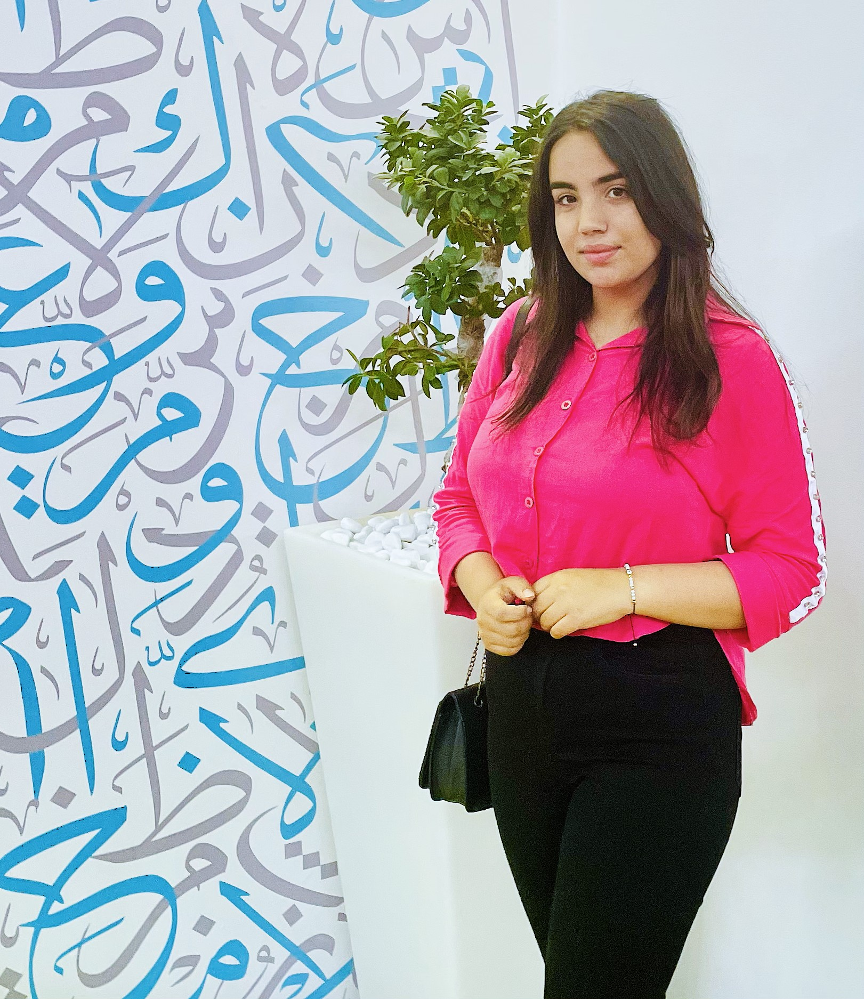

| 
|
Je m'appelle Mrabet Hiba, j'ai 19 ans. Je suis actuellement étudiante en 1ere annee Cycle Préparatoire Intégré, avec un fort intérêt pour les technologies et les applications créatives. Bien que "Les Trésors de Carthage" soit un projet secondaire, il représente une fusion de ma passion pour l’artisanat tunisien et ma curiosité pour le design et la gestion de projet. |
Responsable du développement d'un projet artisanal consacré à la création de vêtements traditionnels tunisiens. Gestion des opérations avec des artisans locaux et promotion du patrimoine tunisien.
Formation axée sur la programmation, le développement d'applications web, et l'algorithmique.